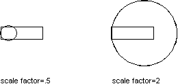

Autodesk AutoCAD 2021: ActiveX Developer's Guide > Create and Edit AutoCAD Entities > About Modifying Objects (VBA/ActiveX) >
You scale an object by specifying a base point and a length, which is used as a scale factor based on the current drawing units. You can scale all the drawing objects, as well as attribute reference objects.
To scale an object, use the ScaleEntity method provided for that object. This method scales the object equally in the X, Y, and Z directions. It takes as input the base point for the scale and a scale factor. The base point is a variant array with three doubles. These doubles represent a 3D WCS coordinate specifying the point from which the scale begins. The scale factor is the factor by which to scale the object. The dimensions of the object are multiplied by the scale factor. A scale factor greater than 1 enlarges the object. A scale factor between 0 and 1 reduces the object.

This example creates a closed lightweight polyline and then scales the polyline by 0.5.
Sub Ch4_ScalePolyline() ' Create the polyline Dim plineObj As AcadLWPolyline Dim points(0 To 11) As Double points(0) = 1: points(1) = 2 points(2) = 1: points(3) = 3 points(4) = 2: points(5) = 3 points(6) = 3: points(7) = 3 points(8) = 4: points(9) = 4 points(10) = 4: points(11) = 2 Set plineObj = ThisDrawing.ModelSpace.AddLightWeightPolyline(points) plineObj.Closed = True ZoomAll ' Define the scale Dim basePoint(0 To 2) As Double Dim scalefactor As Double basePoint(0) = 4: basePoint(1) = 4.25: basePoint(2) = 0 scalefactor = 0.5 ' Scale the polyline plineObj.ScaleEntity basePoint, scalefactor plineObj.Update End Sub